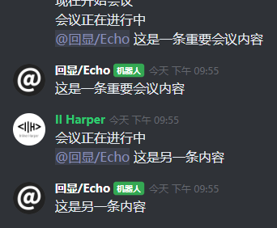

第一部分：创建一个「回显」机器人
欢迎使用 Kaiheila.NET！从现在开始，我们将使用 Kaiheila.NET 开始创建属于自己的机器人。
在第一部分，我们将会创建一个「回显」机器人。这个机器人会将用户 At 它时候所说的话发回到频道中。

注意：你无需任何的编程基础！ 这一部分的教程足够简单，你只需要将教程中的代码复制粘贴到你的项目中即可。但是，在这部分教程结束之后，你可能需要稍微掌握一点 「C#」 方面的知识才能更好地开发出你想要的机器人，而这些知识一点也不难。
如果你在阅读教程的时候或自己开发的时候有任何问题，你都可以来「机器人社区」服务器的「开发」分组提问。
第一步：安装！
首先，你需要安装一个 .NET SDK。这是机器人运行所需的程序框架。
然后，你需要一个集成开发环境（IDE）。在 Windows 上，我们推荐你使用 Visual Studio。在 MacOS 和 Linux 上，我们推荐你使用 Visual Studio Code。按照提示完成安装。
注意
在安装 Visual Studio 时，你需要在「工作负载」中选择「.NET 桌面开发」。
你的开发环境已经就绪！
第二步：创建！
接下来，让我们创建一个新的项目。
打开 Visual Studio 并创建一个新的
.NET Core 控制台项目，项目名为echo。点击上方绿色的播放键运行项目。你会看到应用成功输出了
Hello World!。
接着，前往「开黑啦开发者中心」并新建一个机器人。创建成功后，不要关闭页面。之后我们需要用到页面上提供的内容。
第三步：编程！
引入 Kaiheila.NET
右键单击项目文件中的「引用项」，并选择「管理 NuGet 程序包」。
使用搜索找到「Kaiheila」包，并点击安装。
选择你的连接方式
如果你希望自己的机器人可以接收到来自其他人的消息并做出响应，那么你的机器人就必须连接到「开黑啦」服务器。
「开黑啦」目前提供了两种连接服务器的方法：WebHook 和 WebSocket。你可以选择一种方法进行连接。
在「开发者中心」中选择连接方式为
WebHook。打开
Program.cs，将文件内容替换为下面的内容：
using System;
using System.Threading;
using Kaiheila.Client;
using Kaiheila.Client.WebHook;
using Kaiheila.Events;
namespace Echo
{
public static class Program
{
// 程序的「入口点」
public static void Main(string[] args)
{
// 程序将从这里开始运行
// 首先，创建一个 Bot
Bot bot =
WebHookClient.CreateWebHookClient() // 使用「WebHookClient」来创建
.Configure(options =>
{
options
.Listen(8000) // 要监听的端口
.UseEncryptKey("VYDVSU") // 「开发者中心」中提供的 Encrypt Key
.UseVerifyToken("JEe-o85KiCd78fi") // 「开发者中心」中提供的 Verify Token
.UseBotAuthorization("1E/3p7EClDQ=/Fro4cT47ipnqcERGFDvfQw=="); // 「开发者中心」中提供的 Token
}).Build(); // 创建「WebHookClient」
bot.Start(); // 启动机器人
// TODO: 监听并处理机器人接收到的消息
new ManualResetEvent(false).WaitOne(); // 阻止应用退出
}
}
}
将上面字符串（即双引号）中的各项内容修改为「开发者中心」的机器人项目页面中提供的内容。
将「开发者中心」机器人页面中的
Callback Url修改为：
http://你的公网IP:8000
编写回显代码
现在，我们的机器人已经连接到了开黑啦服务器。接下来，我们要对机器人收到的消息进行处理，也就是完成 TODO 中的部分。
将 TODO 行替换成以下内容：
long selfId = 2152172534; // 将「selfId」设定为自己的机器人ID
bot.Event.Subscribe(x => // 订阅机器人事件，并处理得到的事件x
{
if (!(x is KhEventTextMessage msg)) return; // 如果x不是「KhEventTextMessage」（文本消息）就什么也不做
// 此时，msg已经是「KhEventTextMessage」（文本消息）了
if (!msg.Content.Contains("#" + selfId)) return; // 如果msg的内容中不含「#2152172534」就什么也不做
string result = msg.Content.Split("#" + selfId)[1].Trim(); // 将「result」设定为「#2152172534」之后的内容
msg.Content = result; // 将msg的内容设定为我们刚刚得到的「result」
bot.Send(msg); // 让机器人发送这个msg
});
这样，机器人就会检测每一条收到的消息。如果消息内含有 #2152172534，那么就会返回这之后的内容。
而在开黑啦中，「At」人的实际内容就是 @用户#ID，也就是说你发送一条内容为「@Il Harper 内容」的消息，机器人看到的实际上是「@Il Harper#2152172534 内容」。这样，我们只需要截取ID之后的内容，就可以实现「对 At 消息做出响应」了。
第四步：运行！
按下播放键，你的机器人即会开始运行。
现在，在「开发者中心」中跳转到「邀请」页面，将机器人邀请到你的服务器，开始使用你自己创建的机器人吧！
附：程序的完整代码
如果你在创建机器人的过程中出现了问题，你可以参考下面的完整代码。如果你有任何其他问题，你也可以来「机器人社区」服务器的「开发」分组提问。
using System;
using System.Threading;
using Kaiheila.Client;
using Kaiheila.Client.WebHook;
using Kaiheila.Events;
namespace Echo
{
public static class Program
{
// 程序的「入口点」
public static void Main(string[] args)
{
// 程序将从这里开始运行
// 首先，创建一个 Bot
Bot bot =
WebHookClient.CreateWebHookClient() // 使用「WebHookClient」来创建
.Configure(options =>
{
options
.Listen(8000) // 要监听的端口
.UseEncryptKey("VYDVSU") // 「开发者中心」中提供的 Encrypt Key
.UseVerifyToken("JEe-o85KiCd78fi") // 「开发者中心」中提供的 Verify Token
.UseBotAuthorization("1E/3p7EClDQ=/Fro4cT47ipnqcERGFDvfQw=="); // 「开发者中心」中提供的 Token
}).Build(); // 创建「WebHookClient」
bot.Start(); // 启动机器人
long selfId = 2152172534; // 将「selfId」设定为自己的机器人ID
bot.Event.Subscribe(x => // 订阅机器人事件，并处理得到的事件x
{
if (!(x is KhEventTextMessage msg)) return; // 如果x不是「KhEventTextMessage」（文本消息）就什么也不做
// 此时，msg已经是「KhEventTextMessage」（文本消息）了
if (!msg.Content.Contains("#" + selfId)) return; // 如果msg的内容中不含「#2152172534」就什么也不做
string result = msg.Content.Split("#" + selfId)[1].Trim(); // 将「result」设定为「#2152172534」之后的内容
msg.Content = result; // 将msg的内容设定为我们刚刚得到的「result」
bot.Send(msg); // 让机器人发送这个msg
});
new ManualResetEvent(false).WaitOne(); // 阻止应用退出
}
}
}